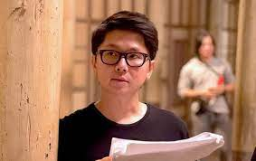

Tailândia
A Tailândia é um país principalmente conhecido por suas crenças populares misturadas com lendas de espíritos ou fantasmas do folclore local. Esses mitos sobreviveram e evoluíram, tendo sido adaptados para a mídia moderna, como filmes tailandeses, novelas e quadrinhos.
Cultura de filmes tailandeses
Industria cinematográfica:
A indústria cinematográfica e os filmes produzidos na Tailândia são semelhantes aos filmes produzidos na Indonésia, Malásia, Filipinas, Singapura e Vietnã. A "época de ouro" foi o período pós segunda guerra e na década de 1970 teve uma grande produção de filmes nacionais tailandeses. Hoje em dia a arte no país vive uma nova onda com diretores como Nonzee Nimibutr, Pen-Ek Ratanaruang e Apichatpong Weerasethakul, e também com o herói de filmes de ação Tony Jaa que é uma espécie de "Bruce Lee" do Muay Thay. O cinema tailandês possui vários filmes premiados em festivais como Wonderful Town - "Las Palmas Film Festival" em 2007; Ploy - "Cannes Film Festival" em 2008; Uncle Boonmee Who Can Recall His Past Lives - "Cannes Film Festival" em 2010;
Diretor mais conhecido do terror tailandeses
Bangjong Pisanthanakun
Bangjong Pisanthanakun é um cineasta e roteirista tailandês nascido em Bangkok na Tailândia. Ele teve um sucesso precoce com seus dois primeiros filmes, Shutter (2004) e Alone (2007), ambos filmes de terror que ele codirigiu e escreveu com Parkpoom Wongpoom . Desde então, ele dirigiu filmes em uma variedade de gêneros, incluindo a comédia romântica de 2010 Hello Stranger , a comédia de terror e romance de 2013 Pee Mak que se tornou o filme de maior bilheteria da Tailândia de todos os tempos e o filme de 2016 Um dia.
Lista de melhores filmes de terror tailandeses:
Caso queira assistir ao trailer dos filmes da lista abaixo, basta clicar com o botão direito do mause em cima do titulo do filme desejado